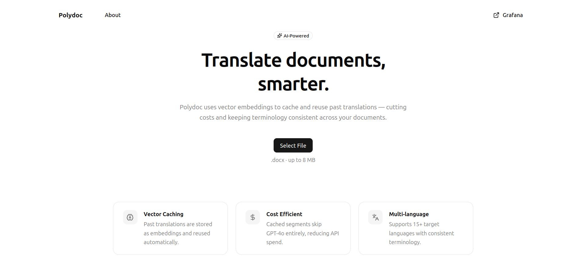
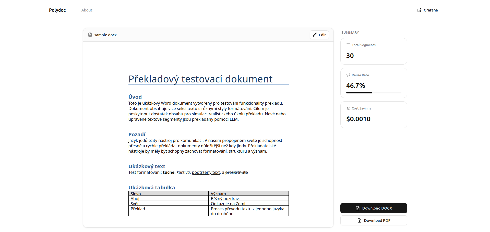
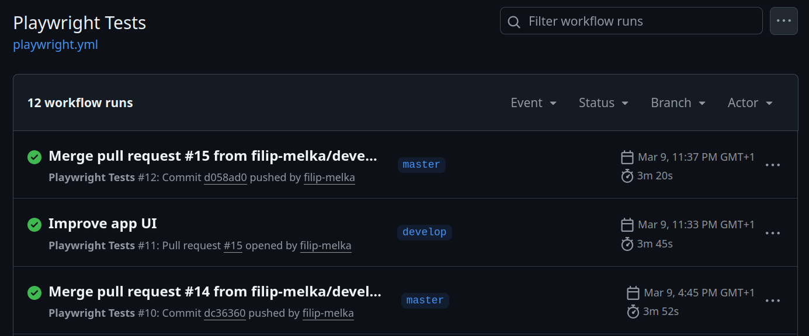
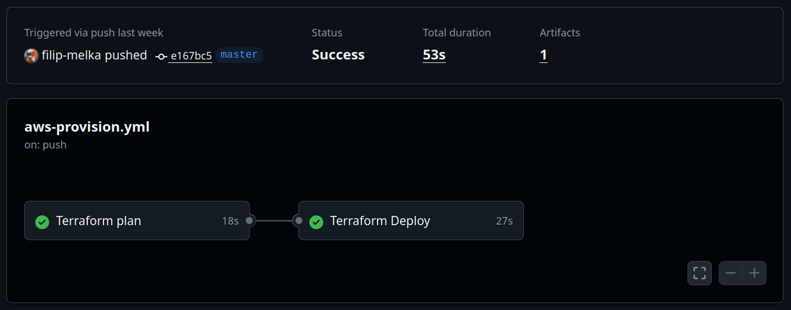
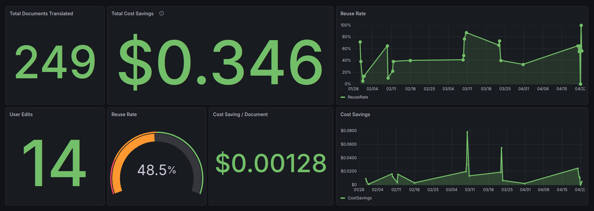
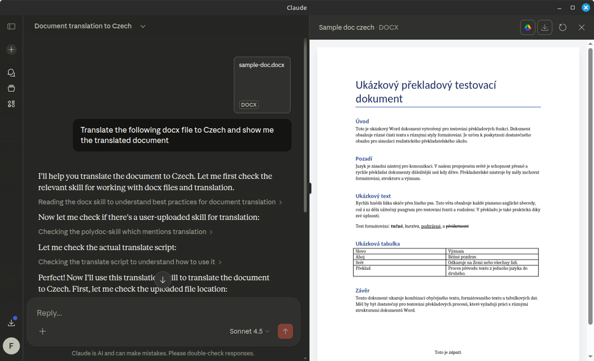

Polydoc uses vector embeddings to cache and reuse past translations — cutting costs and keeping terminology consistent across your documents.
The app
Upload a document, pick a language — Polydoc handles the rest. The translation result shows exactly how much was saved from the cache.


Why Polydoc
Vector Caching
Past translations are stored as high-dimensional embeddings and reused automatically when semantically equivalent text appears.
Formatting Preserved
Tables, headers, footers, and paragraph styles are extracted and reassembled — your document structure survives translation intact.
Cost Savings
Cached segments skip GPT-4o entirely. Only novel content touches the API — proven to reduce translation costs by up to 21.5%.
Translation is expensive
LLM APIs charge per token. Large document portfolios — legal contracts, product manuals, subtitle libraries — repeat the same phrases constantly. Without caching, you pay for every word on every run.
Polydoc fixes that
Each translated segment is stored as a high-dimensional embedding. Before touching the API, Polydoc checks whether a semantically equivalent translation already exists. If it does, the result is returned instantly — no API call, no cost.
The key insight
Exact string matching would miss almost every reuse opportunity. Real documents paraphrase and rephrase — meaning stays the same while words change.
Real-world benchmark
Polydoc was tested against the Friends TV show subtitle corpus. As episodes accumulate in the cache, reuse climbs — each new episode costs less to translate.
Figures represent cumulative subtitle reuse rate across sequential episodes. Episode 1 bootstraps the cache from zero.
Under the hood
Upload
Upload a .docx file and choose a target language. Polydoc extracts every text segment — paragraphs, tables, headers, and footers — preserving the original structure.
Cache Lookup
Each segment is embedded with
text-embedding-3-small and queried against
ChromaDB. Segments within cosine distance 0.3 of a past
translation are reused instantly — zero API cost.
Translate & Store
Only novel segments reach GPT-4o. New translations are embedded and stored back into ChromaDB, growing the cache smarter with every document.
Results
0%
Cache hit rate
on structured documents
0%
Cost savings
on serialised corpora
0%
Cost reduction
on a 1,000-line benchmark
0
Languages
supported out of the box
Figures from controlled research benchmarks. Results vary by document similarity.
Built with
Automation
Every push is validated automatically — Playwright E2E tests run on all PRs, and infrastructure is provisioned via Terraform on merge to master.

Playwright tests run on every push and pull request to
master, catching regressions before they land.

terraform plan runs on PRs;
terraform apply deploys Lambda, S3, and IAM
automatically on merge to master.
Observability
Every translation emits custom CloudWatch metrics — total segments, reused segments, cost savings, and user edits — streamed into a Grafana dashboard for real-time monitoring.

249
Documents translated
48.5%
Average reuse rate
14
User edits tracked
Metrics are emitted to CloudWatch on every Lambda invocation and visualised in Grafana using a public dashboard — no login required.
View live dashboard ↗Agentic extension
Polydoc ships as an installable Claude skill — enabling AI agents in Claude Desktop to translate documents through natural language, with no UI required.

Natural language trigger
Drop a .docx file and say which language you
want. Claude detects the intent and activates the skill
automatically.
Direct Lambda invocation
The skill calls translate() in Python, which
base64-encodes the file and invokes the Polydoc AWS Lambda —
the same backend the web app uses.
Result with metrics
The translated .docx is downloaded from S3 and
opened in Claude's file preview. Cache reuse rate and cost
savings are reported inline.
Supported languages
Get in touch
This is a Final Year Project. Questions, feedback, or collaboration are welcome.